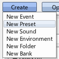
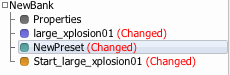
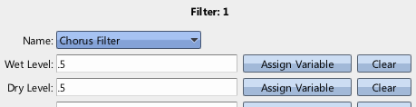
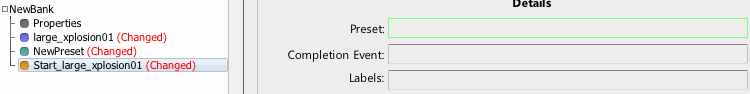
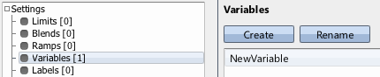
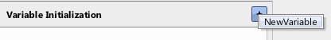
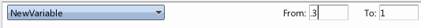
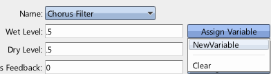

|
Presets and Variables |
| Navigation |
This guide will introduce a new way of affecting how a sample sounds via Presets.
Requisite Terminology
New Terminology
Steps



All sounds have 8 filter stages that can be assigned to a DSP filter. A preset can affect all 8 at once by setting or removing a filter. A specific stage can also be ignored using the default "Don't Change" selection - this will leave whatever was set on that stage alone. This preset now assigned the Chorus filter to the first filter stage on any sound it is applied to.

At this point, the sound will play with a chorus effect. This is a very basic use of a preset - but it illustrates how to set up and apply a preset to a sound. Go ahead and audition the sound to hear it.
In this case, the chorus filter's parameter are unchanging - the filter will apply the same way to all sounds that use this preset. This may be desired, but if more variability is required, a Variable must be used.
Variables
Variables are generally set by the game. They represent values that can't be known ahead of time - user volume levels, etc. To reference them in Miles Studio, they need to be created in much the same way Labels are. Once that's done, they can be placed in many locations where a specific number would have gone. When done so, instead of using the number, Miles will query the value of the variable at that time, and use that value instead. For this guide, since we don't have a game to set anything for us, we're going to use the capability of the Start Sound Event Step to initialize variables for use in the sound it starts.


Variable initialization specifies a range to randomly select from when initializing a desired variable. In this step, we are saying we want to initialize the variable NewVariable, and the default range of 0 to 1 will be used.

In order to hear the effect more strongly, the lower portion of the range is cut off. The start sound event step will now randomly choose a number between .3 and 1, and set the variable NewVariable to that number.

This tells Miles to look up the value associated with NewVariable instead of using the previous number of .5. So in order, the start sound event step picks a value between .3 and 1, and sets it to NewVariable. Later in the process of starting the sound, it applies the preset, which finds that a variable has been specified as the wet level in the chorus filter. Upon reaching that variable, it checks the sound that is in the process of being started for any variables with that name, and finds the random value. It then uses that value for the wet level.
 Ducking and Ramps Ducking and Ramps |
 Sound Designer User Guide Sound Designer User Guide |
 Ducking and Busses Ducking and Busses |

|
Miles Sound System 9.3b
E-mail miles3@radgametools.com for technical support. Copyright © 1991-2012 by RAD Game Tools, Inc. All Rights Reserved. |

|